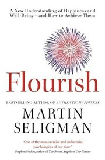

Flourish: A Visionary New Understanding of Happiness and Well-being
Book·Martin Seligman, 2011·持续的幸福

Extends from happiness to positive emotion, engagement, relationships, meaning and accomplishment.
- Author
- Martin Seligman
- Year
- 2011
- Difficulty
- Beginner
- Kind
- Primary text
- Schools
- Positive Psychology
- Core theories
- PERMA Model of Well-Being
Editions
- Chinese edition 《持续的幸福》 [美]马丁•塞利格曼（Martin E.P. Seligman） · tr. 赵昱鲲 · 浙江人民出版社 · 2012 Douban 7.3 (1107 ratings) Douban page ↗
- English edition Flourish: A Visionary New Understanding of Happiness and Well-being Martin E. P. Seligman · Free Press, first edition · 2011 Open Library ↗